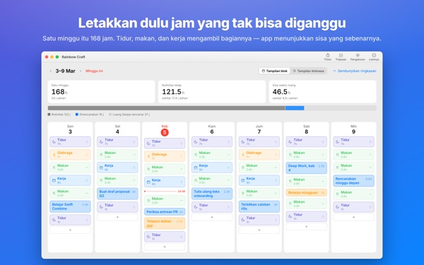
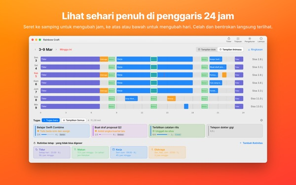
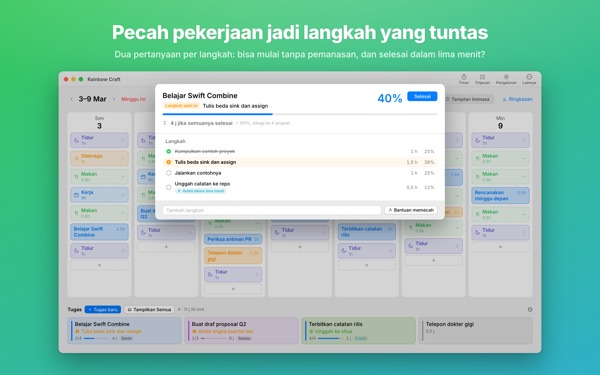
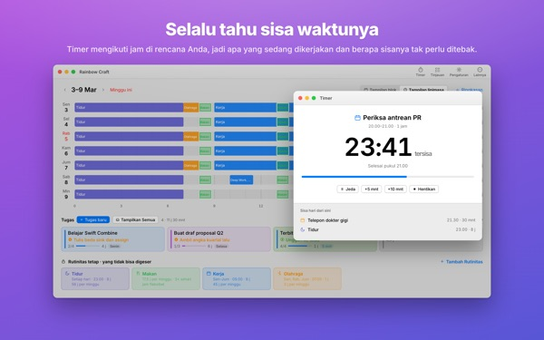
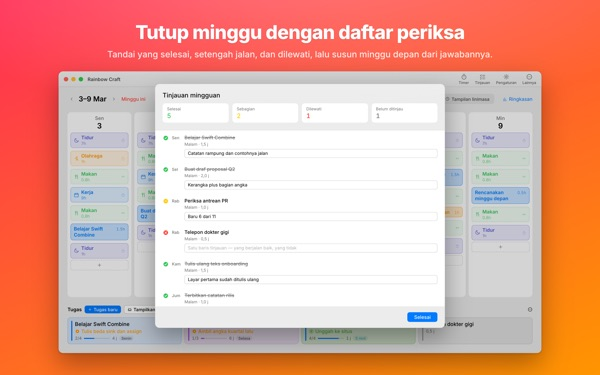

Semuanya benar-benar muat
minggu ini?
Rainbow Craft membentangkan minggumu di Mac per hari dan per jam. Mulai dari waktu yang tidak bisa dikorbankan, seperti tidur, makan, dan kerja, seret tugas ke celah yang tersisa, lalu lihat apa yang benar-benar muat.
Perencanaan, rutinitas, tugas, tinjauan, timer, dan impor kalender gratis.

Coba susun seminggu di sini
Kami sudah memasang empat rutinitas yang disarankan aplikasi saat pertama dibuka. Nyalakan dan matikan, lalu taruh tugas di hari-harinya.
Daftarnya makin panjang, minggunya tidak.
Daftar tugas tidak bisa memberi tahu apakah minggumu sanggup menampungnya. Setelah tidur, makan, dan perjalanan mengambil jatahnya, sisanya lebih sedikit dari yang kamu kira. Rainbow Craft menampilkan jam-jam itu sebagai angka dan kotak, dan membiarkanmu mencoba setiap tugas di tempat yang nyata.
Lihat sehari di penggaris 24 jam
Tampilan linimasa membentangkan sehari di atas penggaris 24 jam. Celah dan bentrokan langsung terlihat, dan kamu yang memilih cara menata acara yang bertumpuk.
Ambil rapat dan janji dari Kalender di Mac tanpa mengetik dua kali. Kalau mau, rencanamu juga bisa masuk ke kalender Rainbow Craft terpisah yang terlihat di iPhone. Kalender lainnya tidak pernah diubah.

Pecah pekerjaan besar jadi langkah yang bisa selesai
Pekerjaan besar macet saat masih ada yang menghalangi. Aplikasi menanyakan dua hal untuk tiap langkah: bisa mulai tanpa pemanasan? Bisa selesai dalam lima menit?
Yang lolos keduanya adalah kepingan untuk setiap lima menit yang kosong. Sisanya butuh waktu khusus. Kalau aplikasi salah menebak, kamu yang memutuskan.

Sedang mengerjakan apa, dan berapa lama lagi
Saat waktunya tiba, rencana berubah jadi sedang berjalan, dan begitu waktunya habis aplikasi bertanya apakah sudah selesai. Timer mengikuti jadwalmu.
Widget Timer Saat Ini menampilkan yang sedang kamu kerjakan dan sisa waktunya tanpa membuka aplikasi.

Tutup minggu dengan daftar centang
Tinjauan mingguan berisi satu kartu per hari. Tandai yang selesai, setengah selesai, atau dilewati, lalu pakai untuk menyusun minggu berikutnya.
Dengan akun iCloud yang sama, tugas berpindah antara aplikasi ini dan Rainbow of Desire di iPhone, jadi rencana hari ini dari Mac ikut ke mana pun kamu pergi.

Mulai dalam tiga langkah
- 1
Tetapkan jam yang tidak bisa diganggu
Yang berulang tiap minggu, seperti tidur, makan, dan kerja, dijadikan rutinitas. Aplikasi tidak mengisi apa pun untukmu.
- 2
Tulis tugasmu
Satu per baris di Tugas di bagian bawah. Kapan mengerjakannya belum perlu diputuskan.
- 3
Seret ke hari
Begitu ditaruh di sebuah hari, tugas jadi rencana. Tanggalnya bergeser? Seret ke hari lain atau kembali ke daftar.
Hitungan dengan rutinitas yang disarankan
- Seminggu
- 168 jam
- Tidur · 8 jam sehari
- 56 jam
- Makan · tiga kali sehari
- 17,5 jam
- Kerja · sekolah · 9 jam di hari kerja
- 45 jam
- Olahraga · 1 jam Sen, Rab, Jum
- 3 jam
- Waktu yang benar-benar kamu punya minggu ini
- 46,5 jam
Ini hanya saran. Pilih dan sesuaikan rutinitas dengan hidupmu. Saat cuti atau dinas, hapus kerja dari hari itu saja.
Semua yang kamu perlukan untuk minggu ini gratis
Gratis
- Rencana mingguan dan harian, rutinitas, dan tugas tanpa batas
- Tampilan linimasa dan pemecahan langkah
- Tinjauan mingguan, bisa disalin sebagai teks
- Timer dan widget Timer Saat Ini
- Impor kalender
- Sinkron dengan Rainbow of Desire di iPhone
- Tren 2 minggu terakhir
Plus · Pro
- Plus: tren 8 minggu, hari dan jam terbaikmu
- Plus: rencana vs. kenyataan
- Plus: pasang sekaligus rencana minggu yang berjalan lancar
- Pro: semua isi Plus dan berbagi jadwal lewat tautan hanya-lihat
- Pro: sekali beli, aplikasi iPhone juga jadi Pro
Tiap tingkat bisa langganan tahunan atau sekali bayar seumur hidup
Lihat harganya di aplikasi dan App Store. Langganan tahunan diperpanjang otomatis kecuali dibatalkan paling lambat 24 jam sebelum periodenya berakhir. Pro yang dibeli di iPhone juga berlaku di Mac dengan akun iCloud yang sama.
Pertanyaan umum
Harus masuk ke iCloud?
Tidak, kalau hanya dipakai di Mac. iCloud diperlukan untuk sinkron dengan iPhone dan untuk membagikan jadwal.
Apakah aplikasi mengubah kalenderku?
Kalender yang sudah ada tidak pernah diubah. Impor hanya membaca kalender yang kamu pilih. Kalau kamu menyalakan penulisan rencana ke kalender Rainbow Craft, aplikasi membuat kalender terpisah itu dan hanya menulis di sana. Kalender itu bisa kamu hapus kapan saja di aplikasi Kalender.
Tugas dari Mac tidak muncul di iPhone.
Pastikan kedua perangkat memakai akun iCloud yang sama dan Rainbow of Desire terpasang di iPhone. Sinkron lewat iCloud, jadi bisa butuh beberapa menit.
Kalau jendela ditutup, aplikasinya ikut keluar?
Tidak. Aplikasi tetap berjalan. Buka lagi jendelanya dari menu Jendela atau dengan mengeklik ikon di Dock.
Apa yang terjadi pada tugas dan rencanaku saat pembaruan?
Tetap seperti semula. Pembaruan tidak mengubah atau menghapus apa yang kamu tulis.
Bagaimana mengganti bahasa aplikasi?
Pilih di bagian paling atas Pengaturan, di Language · 언어 · 語言, lalu aplikasi dibuka ulang dalam bahasa itu. Ada 23 bahasa. Nama rutinitas dan tugas yang kamu tulis sendiri tidak diterjemahkan.
Ganti Mac, Plus atau Pro hilang.
Masuk dengan Akun Apple yang sama lalu klik Pulihkan Pembelian di Pengaturan. Pembatalan dilakukan di pengaturan akun App Store.
Di mana tulisanku disimpan?
Tanpa akun, tanpa daftar, dan tanpa server pengembang yang menyimpan rencanamu. Yang kamu tulis tetap di perangkatmu dan di iCloud-mu sendiri. Aplikasi mengirim statistik penggunaan anonim tanpa isi tulisanmu, dan bisa dimatikan di Pengaturan lewat Kirim statistik penggunaan anonim.
Mentok atau ada yang aneh? Kirim email ke mizzking75@gmail.com. Di Pengaturan aplikasi juga ada menu untuk menghubungi kami.